Code
library(tidyverse)library(tidyverse)chirpsFor this tutorial, we will use a dataset on the striped ground cricket collected by George W. Pierce and published in his 1948 book The Songs of Insects.
The dataset ch contains two variables: chirps: the number of chirps per second degF: the temperature in degrees Fahrenheit.

Let’s load the data and create a new variable, which is the temperature in Celsius.
ch <- read_csv("https://www.massey.ac.nz/~anhsmith/data/chirps.csv") |>
mutate(degC = (degF-32)*5/9)We will examine how well the temperature predicts the frequency of chirping by this insect.
Plot the data, with temperature on the x-axis and chirps on the y-axis.
ch |>
ggplot() +
aes(degC, chirps) +
geom_point()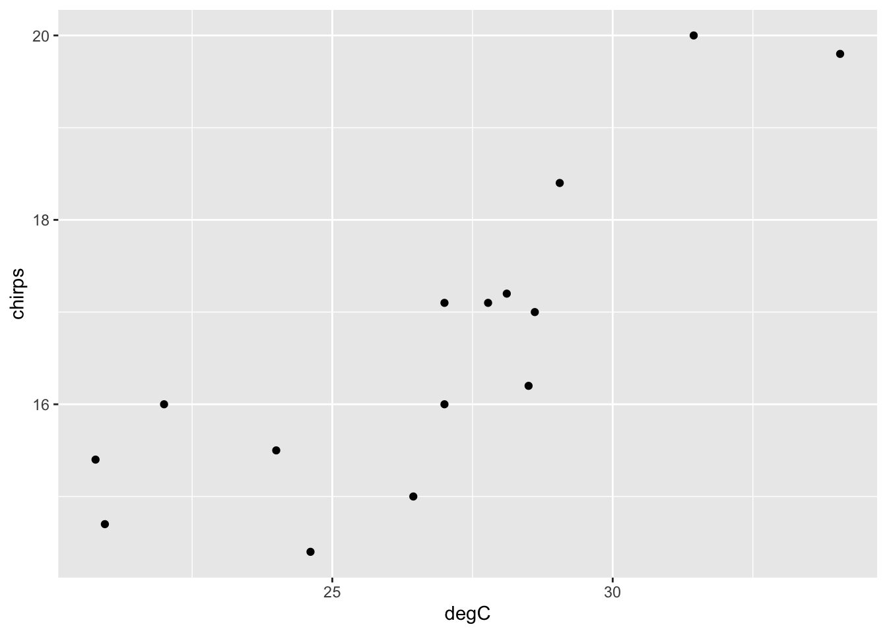
Add a ‘smoother’ line.
ch |>
ggplot() +
aes(degC, chirps) +
geom_point() +
geom_smooth()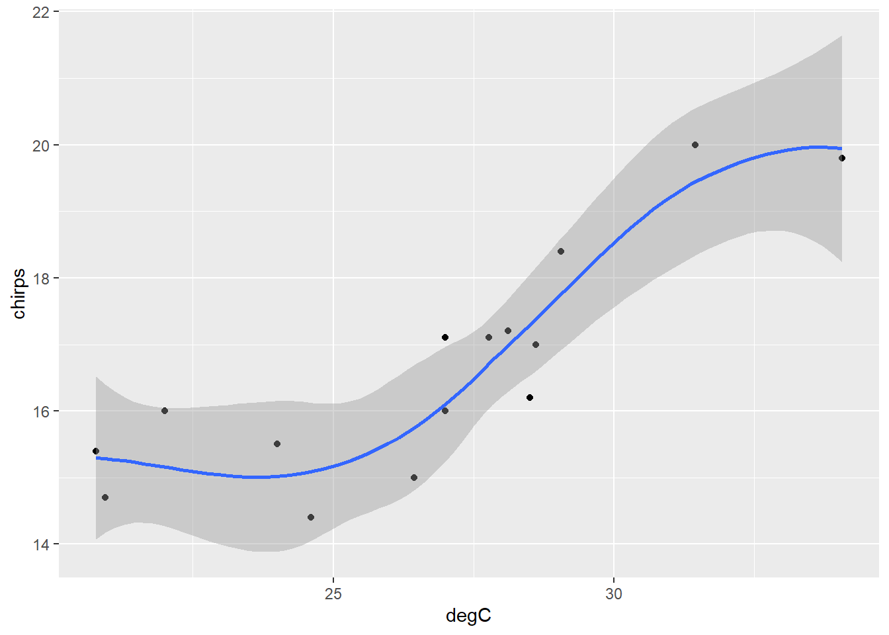
Well… it’s sort-of linear… ish… not really.
Now let’s fit a linear model and print it. (Just typing an object’s name is the same as applying the function print.)
chm <- lm(chirps ~ degC, data = ch)
chm
Call:
lm(formula = chirps ~ degC, data = ch)
Coefficients:
(Intercept) degC
6.4725 0.3815 # or print(chm)This object contains a lot of information, but just printing it doesn’t show us all of it. Each object in R has a ‘class’, which you can reveal like so.
class(chm)[1] "lm"The model object created by the function lm() has class lm. If you unclass() this object, you will see all the information it contains.
unclass(chm)$coefficients
(Intercept) degC
6.472457 0.381465
$residuals
1 2 3 4 5 6
1.532589142 1.135313774 0.336540013 0.843865198 0.327989348 -0.127615826
7 8 9 10 11 12
0.237971364 0.031294055 1.001547697 -1.144208684 -1.560086053 0.004139772
13 14 15
-0.772011032 -0.386593793 -1.460734975
$effects
(Intercept) degC
-64.4980827 5.3185830 0.2895646 0.5875785 -0.0143477 -0.5955397
-0.3578650 -0.2784834 0.3987344 -1.4237522 -1.9256799 -0.2916837
-1.1143481 -0.6614861 -1.9030762
$rank
[1] 2
$fitted.values
1 2 3 4 5 6 7 8
18.46741 14.86469 19.46346 17.55613 16.77201 15.62762 14.46203 17.06871
9 10 11 12 13 14 15
14.39845 17.34421 16.56009 17.19586 16.77201 17.38659 15.86073
$assign
[1] 0 1
$qr
$qr
(Intercept) degC
1 -3.8729833 -1.033656e+02
2 0.2581989 1.394252e+01
3 0.2581989 -4.583652e-01
4 0.2581989 -9.974999e-02
5 0.2581989 4.768089e-02
6 0.2581989 2.628501e-01
7 0.2581989 4.820038e-01
8 0.2581989 -8.103759e-03
9 0.2581989 4.939575e-01
10 0.2581989 -5.990386e-02
11 0.2581989 8.752703e-02
12 0.2581989 -3.201138e-02
13 0.2581989 4.768089e-02
14 0.2581989 -6.787296e-02
15 0.2581989 2.190191e-01
attr(,"assign")
[1] 0 1
$qraux
[1] 1.258199 1.406296
$pivot
[1] 1 2
$tol
[1] 1e-07
$rank
[1] 2
attr(,"class")
[1] "qr"
$df.residual
[1] 13
$xlevels
named list()
$call
lm(formula = chirps ~ degC, data = ch)
$terms
chirps ~ degC
attr(,"variables")
list(chirps, degC)
attr(,"factors")
degC
chirps 0
degC 1
attr(,"term.labels")
[1] "degC"
attr(,"order")
[1] 1
attr(,"intercept")
[1] 1
attr(,"response")
[1] 1
attr(,".Environment")
<environment: R_GlobalEnv>
attr(,"predvars")
list(chirps, degC)
attr(,"dataClasses")
chirps degC
"numeric" "numeric"
$model
chirps degC
1 20.0 31.44444
2 16.0 22.00000
3 19.8 34.05556
4 18.4 29.05556
5 17.1 27.00000
6 15.5 24.00000
7 14.7 20.94444
8 17.1 27.77778
9 15.4 20.77778
10 16.2 28.50000
11 15.0 26.44444
12 17.2 28.11111
13 16.0 27.00000
14 17.0 28.61111
15 14.4 24.61111Big compound objects such as a lm are often organised into sections called “attributes”, which you can view with this function.
attributes(chm)$names
[1] "coefficients" "residuals" "effects" "rank"
[5] "fitted.values" "assign" "qr" "df.residual"
[9] "xlevels" "call" "terms" "model"
$class
[1] "lm"The attributes under the section “names” can be accessed using the dollar ($) notation, and often with specific formulae. You can read what each of these represent in the help file of lm (?lm). Many of them aren’t that useful, but the following ones certainly are.
chm$coefficients(Intercept) degC
6.472457 0.381465 # or
coef(chm)(Intercept) degC
6.472457 0.381465 This shows us \(a\) and \(b\), the sample estimates of the population parameters, \(\alpha\) and \(\beta\). The model we have fit to this dataset is thus \(Y = 6.47 + 0.38X\).
We can also extract the fitted values and residuals for the model.
chm$fitted.values 1 2 3 4 5 6 7 8
18.46741 14.86469 19.46346 17.55613 16.77201 15.62762 14.46203 17.06871
9 10 11 12 13 14 15
14.39845 17.34421 16.56009 17.19586 16.77201 17.38659 15.86073 # or
fitted(chm) 1 2 3 4 5 6 7 8
18.46741 14.86469 19.46346 17.55613 16.77201 15.62762 14.46203 17.06871
9 10 11 12 13 14 15
14.39845 17.34421 16.56009 17.19586 16.77201 17.38659 15.86073 resid(chm) 1 2 3 4 5 6
1.532589142 1.135313774 0.336540013 0.843865198 0.327989348 -0.127615826
7 8 9 10 11 12
0.237971364 0.031294055 1.001547697 -1.144208684 -1.560086053 0.004139772
13 14 15
-0.772011032 -0.386593793 -1.460734975 The function summary() shows us a useful display of the most important information from the model.
summary(chm)
Call:
lm(formula = chirps ~ degC, data = ch)
Residuals:
Min 1Q Median 3Q Max
-1.56009 -0.57930 0.03129 0.59020 1.53259
Coefficients:
Estimate Std. Error t value Pr(>|t|)
(Intercept) 6.47246 1.87653 3.449 0.004315 **
degC 0.38146 0.06968 5.475 0.000107 ***
---
Signif. codes: 0 '***' 0.001 '**' 0.01 '*' 0.05 '.' 0.1 ' ' 1
Residual standard error: 0.9715 on 13 degrees of freedom
Multiple R-squared: 0.6975, Adjusted R-squared: 0.6742
F-statistic: 29.97 on 1 and 13 DF, p-value: 0.0001067This presents a summary of the residuals; the estimates, standard errors, and t-tests for the coefficients \(\alpha\) and \(\beta\); the residual standard error; the coefficient of determination; and the F-test. We can see that the p-values for the F-test and the t-test for the regression coefficient (\(\beta\)) are the same: we can conclude that temperature has a highly significant effect on the frequency of chirps, accounting for around 70% of the variation. For every degree increase in temperature, the number of chirps per second is expected to increase by 0.38.
We cannot just stop there, however. We need to examine the model and check the assumptions.
Plot the data again, this time with a linear regression line.
ch |>
ggplot() +
aes(degC, chirps) +
geom_point() +
geom_abline(
intercept = 6.47246,
slope = 0.38146
)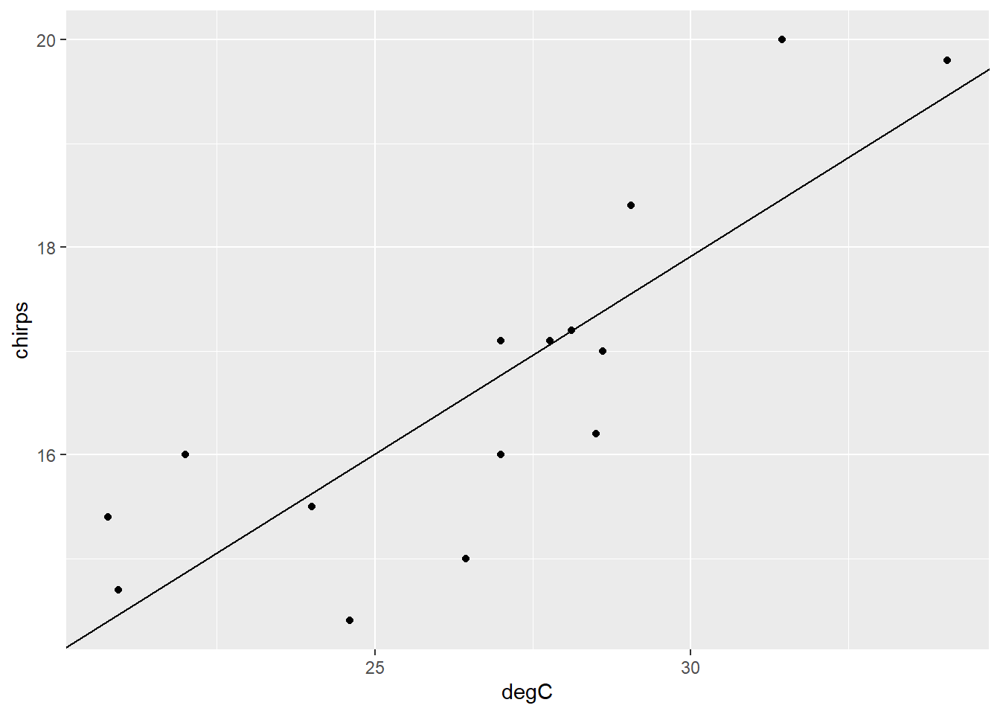
We can also use the function predict() to extract the fitted values, with confidence or prediction intervals for each data point.
predict(chm, interval="confidence") fit lwr upr
1 18.46741 17.56955 19.36527
2 14.86469 13.97481 15.75457
3 19.46346 18.22919 20.69773
4 17.55613 16.90760 18.20467
5 16.77201 16.22807 17.31595
6 15.62762 14.95122 16.30401
7 14.46203 13.44151 15.48254
8 17.06871 16.50254 17.63487
9 14.39845 13.35659 15.44031
10 17.34421 16.73758 17.95084
11 16.56009 16.01692 17.10325
12 17.19586 16.61319 17.77854
13 16.77201 16.22807 17.31595
14 17.38659 16.77226 18.00093
15 15.86073 15.23503 16.48644This gives the predictions for each of the original data points, along with and interval in which the mean prediction lies with 95% confidence (i.e., if we took many many samples and fit a regression model to each, 95% of so-constructed confidence intervals will include the true mean of \(Y\) for this value of \(X\)).
This is not to be confused with a “prediction” interval, which is expected to contain 95% of the actual values of \(Y\) for this value of \(X\), rather than the mean value. They are thus wider than confidence intervals.
predict(chm, interval="prediction") fit lwr upr
1 18.46741 16.18459 20.75023
2 14.86469 12.58499 17.14438
3 19.46346 17.02860 21.89832
4 17.55613 15.35938 19.75289
5 16.77201 14.60384 18.94019
6 15.62762 13.42248 17.83275
7 14.46203 12.12824 16.79582
8 17.06871 14.89485 19.24256
9 14.39845 12.05525 16.74165
10 17.34421 15.15946 19.52896
11 16.56009 14.39210 18.72807
12 17.19586 15.01765 19.37408
13 16.77201 14.60384 18.94019
14 17.38659 15.19970 19.57349
15 15.86073 13.67062 18.05085A 95% confidence interval refers to a mean. It is an interval in which the mean of Y, for a given value of X, is expected to lie with 95% confidence.
A 95% prediction interval is an interval in which 95% of Y values are expected to lie for a given value of X. Prediction intervals are broader than confidence intervals.
You can also use the model to make predictions for new values of \(X\). To do this, first create a data frame object with a column of the same name as the \(X\) variable used in the model (i.e., degC), and then enter this object as the newdata argument for the predict function.
newdat <- data.frame(degC = 20:34)
prednew <- predict(chm, newdata = newdat, interval = "confidence")
prednew fit lwr upr
1 14.10176 12.95828 15.24524
2 14.48322 13.46978 15.49666
3 14.86469 13.97481 15.75457
4 15.24615 14.47024 16.02206
5 15.62762 14.95122 16.30401
6 16.00908 15.41049 16.60767
7 16.39055 15.83880 16.94230
8 16.77201 16.22807 17.31595
9 17.15348 16.57674 17.73022
10 17.53494 16.89096 18.17892
11 17.91641 17.18012 18.65269
12 18.29787 17.45239 19.14335
13 18.67934 17.71348 19.64520
14 19.06080 17.96707 20.15454
15 19.44227 18.21550 20.66903These correspond to the predicted means and confidence intervals for \(Y\), for \(X\) values of 20 to 34.
We can automatically plot confidence intervals for a linear fit like so:
ch |>
ggplot() +
aes(degC, chirps) +
geom_point() +
geom_smooth(method = "lm")
Or with the visreg package.
library(visreg)
visreg(chm, gg=T)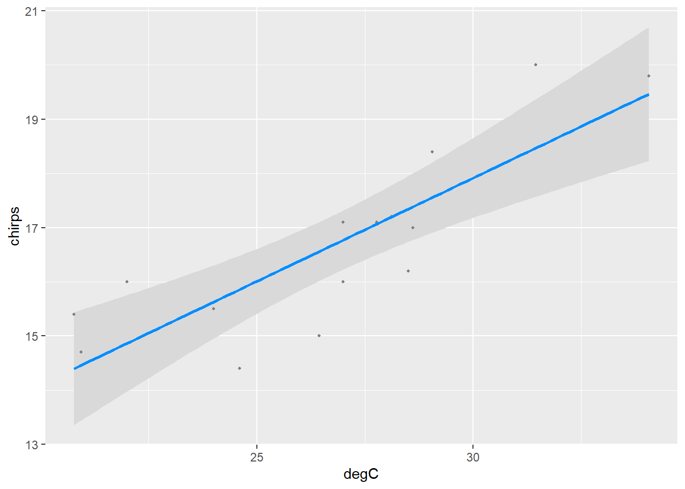
Note that the mean is most certain (i.e., the interval is tighter) around the centre of the data and less so around the extremes.
The linear regression model looks like it provides a reasonable fit to the data. We should just check the residuals though.
ggplot() +
aes(chm$fitted.values, chm$residuals) +
geom_point() +
geom_hline(yintercept = 0)Remember, you want a complete mess in your residual plot—no pattern is good pattern. We generally look for two things: heteroscedasticity and trend. We can see in the plot above that the residuals appear to have quite a constant variance, so no worries about the heteroscedasticity there. However, there is a hint of a trend—there are more points above zero at low and high fitted values, and more below the line at middle fitted values. This is not too severe, but it warrants further consideration.
Using the function plot() on an lm object gives four very useful diagnostic graphs. You can read about them in the help file by entering the following.
plot(chm)
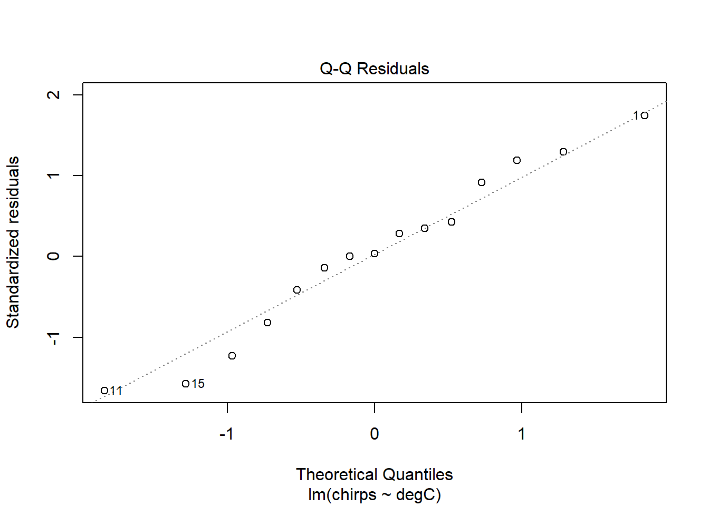
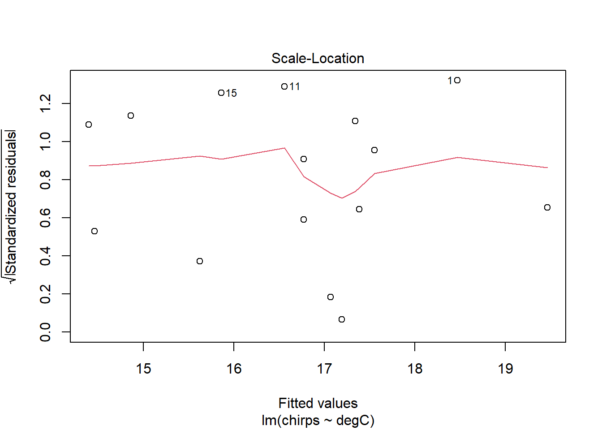
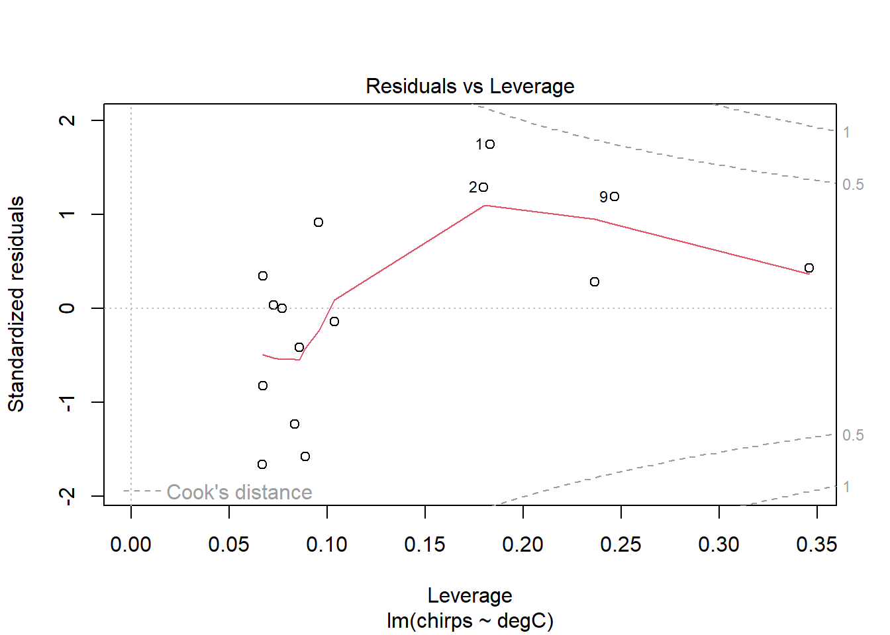
The diagnostic plots are designed to inform the user of any departure from the assumptions of a linear model.
The Residuals vs Fitted plot shows the regular residuals, i.e., the difference between the observed and fitted values on the y-axis plotted against the fitted values on the x-axis. Ideally, this would show a complete trend-less mess. Here, there is a little curvature on the plot, which may concern us a little.
The Normal Q-Q plot compares the residuals with their expected values if they were normally distributed. When lots of points lie away from this line, then there is evidence that the residuals are non-normally distributed, which violates an assumption of linear models. Here, they look pretty good. A little departure from the line at the very ends is common, and no cause for great concern.
The Scale-Location plot shows the square-root of the standardised residuals (i.e. divided by their standard deviation) against the predicted values. This can be used to look for heteroscedasticity—changes in the variance of the residuals for different fitted values—which is also an assumption of linear models. Ideally, there would be no trend in these points and the red line would be perfectly horizontal. It doesn’t look bad here.
Finally, the Residuals vs Leverage plot shows the standardised residuals against Leverage. The leverage measures the potential influence a point has given the extremeness of its values for the predictor variable. If a point has large leverage and a large residual, then it will have large influence, meaning that it is having a large effect on the estimated parameters. So, this plot is useful for identifying outliers and influential points. Any points that are outside the red dashed lines have high values of Cook’s D reflecting a large influence on the estimates a and b, and are therefore potentially cause for concern. So, ideally, there would be no points outside the dashed lines.
The only problem we can see in the diagnostic plots is in the residuals-vs-fitted one, where there’s a bit of curvature, as identified by the red smoother line. Otherwise, the residuals are fairly normal (Q-Q) and with constant variance (scale-location).
From the plots above, it looks like there may be little effect of temperature on chirps below, say, 23 degrees. Let’s fit this model again, this time removing the three data points below this temperature.
chmsub <- lm(chirps ~ degC, data=ch, subset = degC > 23)
summary(chmsub)
Call:
lm(formula = chirps ~ degC, data = ch, subset = degC > 23)
Residuals:
Min 1Q Median 3Q Max
-1.05254 -0.60559 -0.05311 0.75837 1.07639
Coefficients:
Estimate Std. Error t value Pr(>|t|)
(Intercept) 0.86776 2.48526 0.349 0.734
degC 0.57421 0.08821 6.509 6.81e-05 ***
---
Signif. codes: 0 '***' 0.001 '**' 0.01 '*' 0.05 '.' 0.1 ' ' 1
Residual standard error: 0.7998 on 10 degrees of freedom
Multiple R-squared: 0.8091, Adjusted R-squared: 0.79
F-statistic: 42.37 on 1 and 10 DF, p-value: 6.815e-05We now see that if we exclude those points, thus restricting our model to only those times where the temperature is greater than 23°C, we now explain 81% of the variation. The estimated per-degree increase in chirping has gone from 0.38 to 0.57, indicating a much stronger effect.
Let’s have a look at the diagnostic plots.
plot(chmsub)
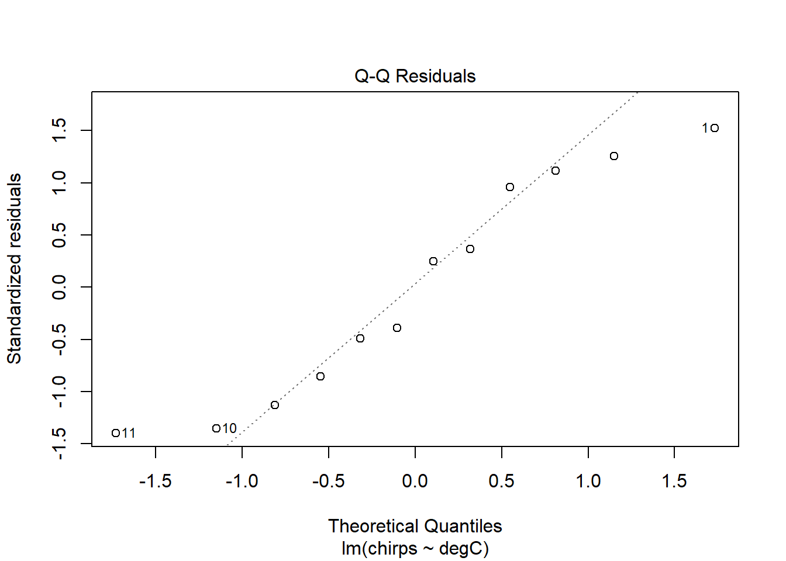
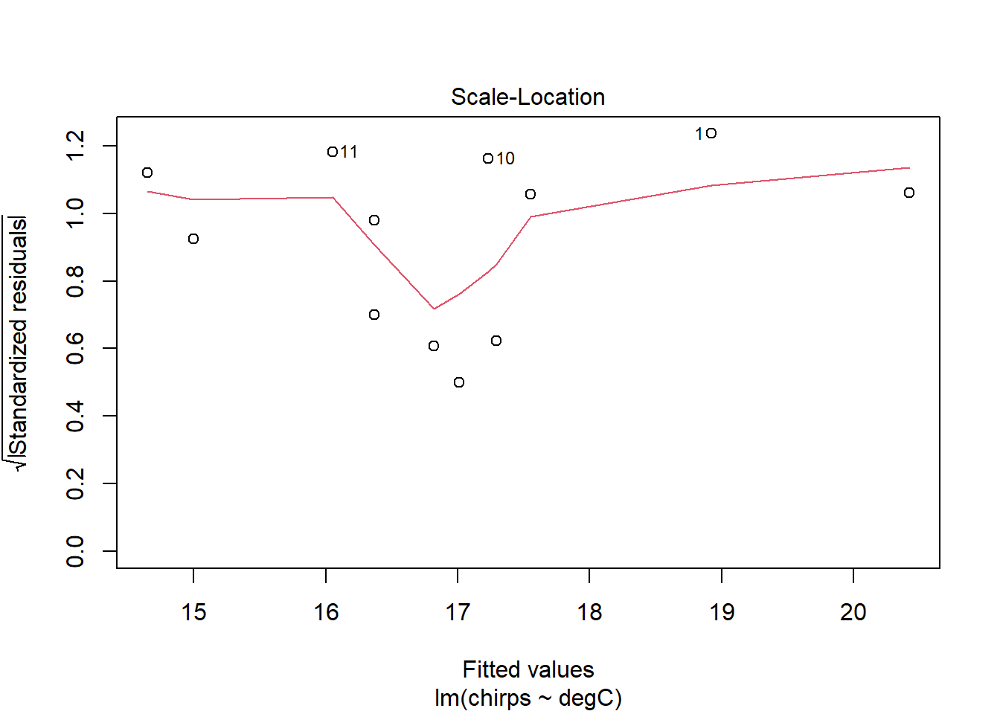

The residuals seem to be a bit better behaved now. Certainly the trend identified in the previous model has disappeared. The smoother lines might look a little wild at first glance, but this is probably just because the dataset is small. I see no real cause for concern.
Now plot the new model with confidence intervals.
ggplot() +
aes(degC, chirps) +
geom_point(
data = ch,
aes(colour = degC > 23)
) +
geom_smooth(
method = "lm",
data = ch |> filter(degC > 23),
colour = 1
)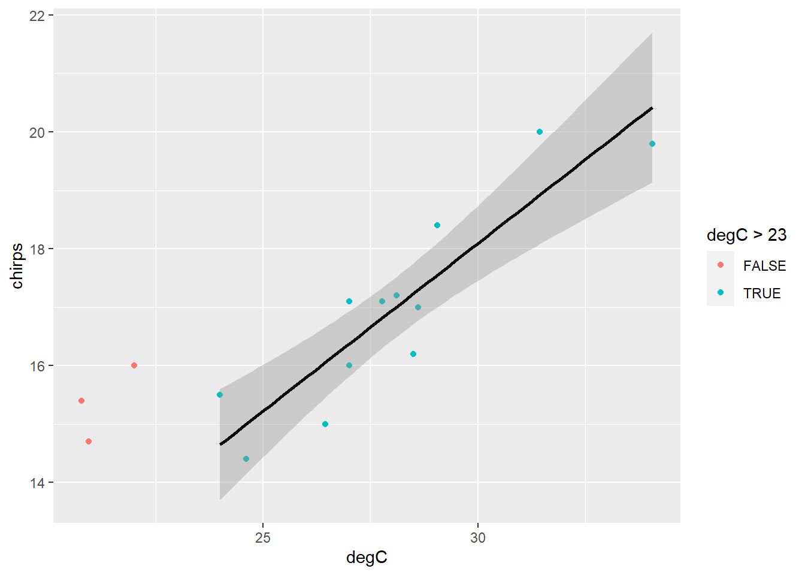
This looks like a much better model overall. Perhaps we can conclude that above approximately 23 degrees, chirping increases linearly with temperature.
It is important to note that subsetting the data in this way changes the inference space to which the model applies. The chmsub model should not be used to predict chirps for temperatures less than 23°C (or greater than 34°C, for that matter). A model should only be used within the range of values spanned by the data used to create it. Beyond this range, it will very likely be wrong. Our exclusion of the sub-23° data therefore further restricts the range of values for which this model may be used.
PrestigeWe will continue to use dataset Prestige from the car R package. ## Linear model
Fit a linear model of prestige against education. Show the fitted line on a scatterplot of prestige ~ education. Check the assumptions using diagnostic plots.
library(car)
data("Prestige")lmp <- lm(prestige ~ education, data = Prestige)
summary(lmp)
Call:
lm(formula = prestige ~ education, data = Prestige)
Residuals:
Min 1Q Median 3Q Max
-26.0397 -6.5228 0.6611 6.7430 18.1636
Coefficients:
Estimate Std. Error t value Pr(>|t|)
(Intercept) -10.732 3.677 -2.919 0.00434 **
education 5.361 0.332 16.148 < 2e-16 ***
---
Signif. codes: 0 '***' 0.001 '**' 0.01 '*' 0.05 '.' 0.1 ' ' 1
Residual standard error: 9.103 on 100 degrees of freedom
Multiple R-squared: 0.7228, Adjusted R-squared: 0.72
F-statistic: 260.8 on 1 and 100 DF, p-value: < 2.2e-16PrestigeReg <- Prestige |>
mutate(
Residuals = residuals(lmp),
Fits = fitted(lmp)
)PrestigeReg |>
ggplot() +
aes(x=education, y=prestige) +
geom_point() +
geom_line(aes(x=education, y=Fits))
plot(lmp)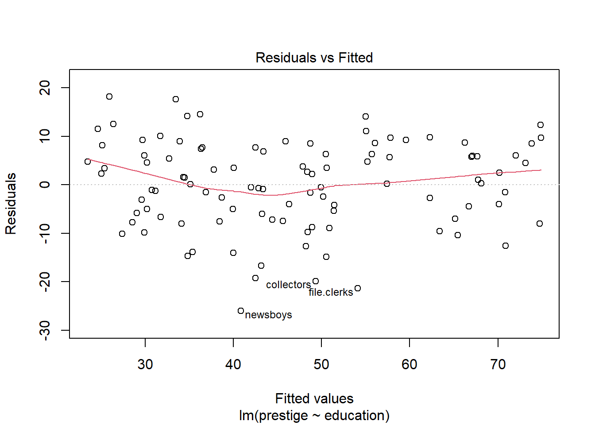
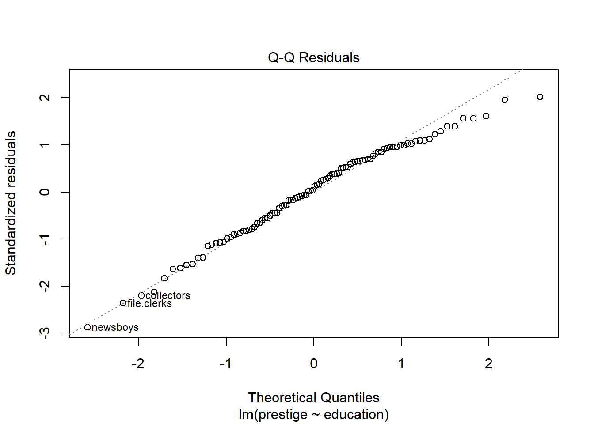
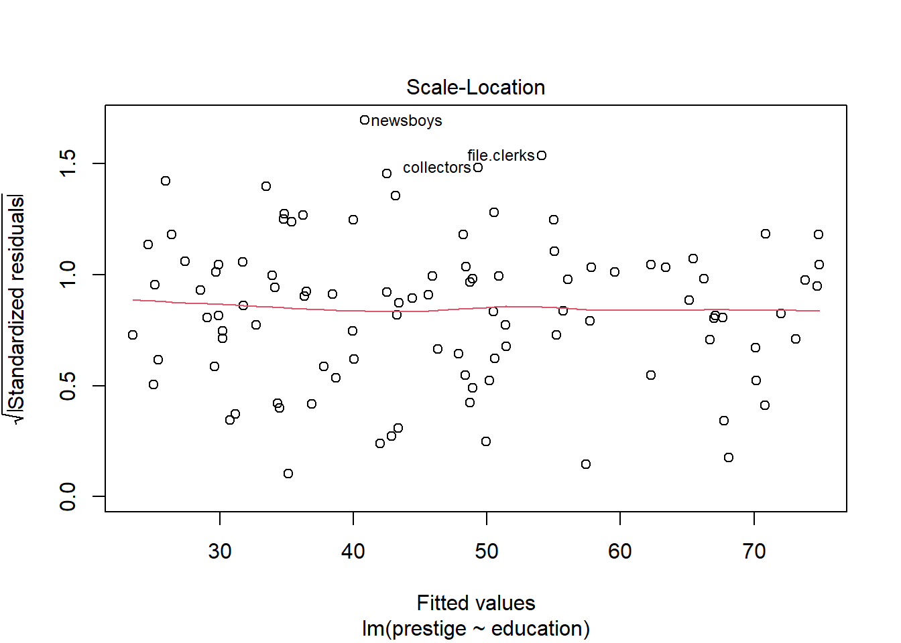

Fit a robust regression using a function in the MASS package.
library(visreg)
library(car)
library(MASS)
rlmp <- rlm(prestige ~ education, data = Prestige)Plot using the visreg package.
visreg(rlmp)Note: